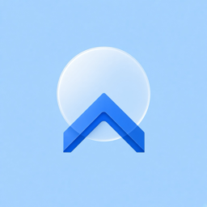
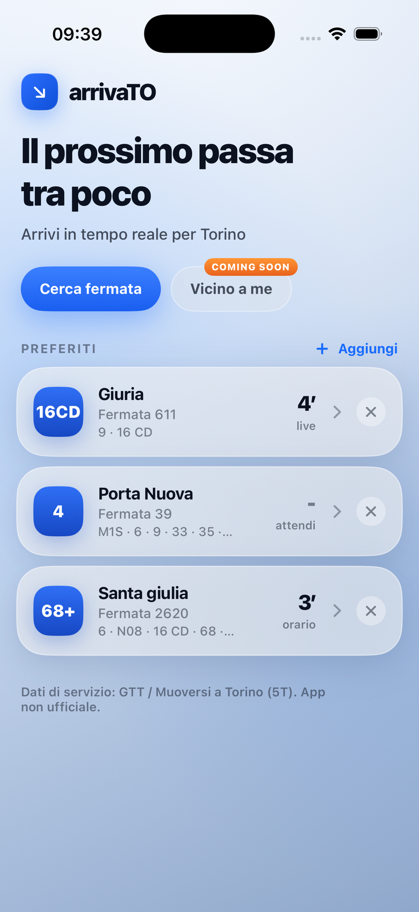
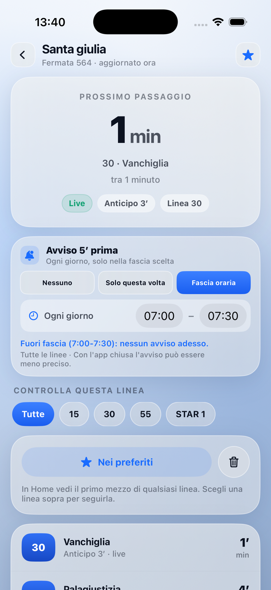
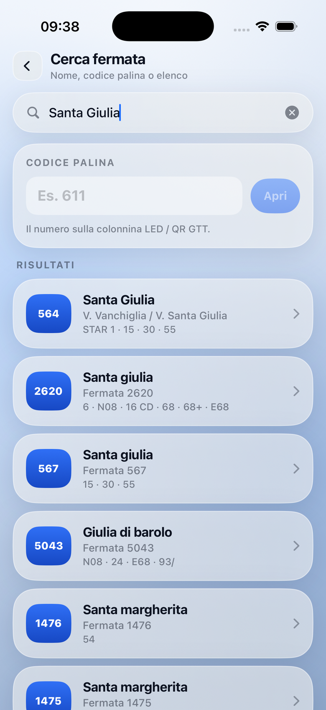

Il problema
Alla fermata spesso non sai se il bus è vicino.
Il tabellone manca. Il QR apre una pagina poco chiara. Aspetti senza sapere se conviene restare.

arrivaTOAlla fermata senza LED, o con solo il QR, spesso non sai quando arriva.

Il problema
Il tabellone manca. Il QR apre una pagina poco chiara. Aspetti senza sapere se conviene restare.
La soluzione
Tieni le fermate che usi. Vedi se il prossimo passa tra poco, se è in orario o in ritardo, e ricevi un avviso a 5 minuti.
L’app
Schermate reali dall’iPhone, stessa misura.



Cosa fa
Salva le fermate che usi davvero e le trovi subito in Home.
Minuti al prossimo passaggio, con live o orario, e ritardo quando c’è.
Attiva l’avviso sulla fermata quando mancano circa cinque minuti.